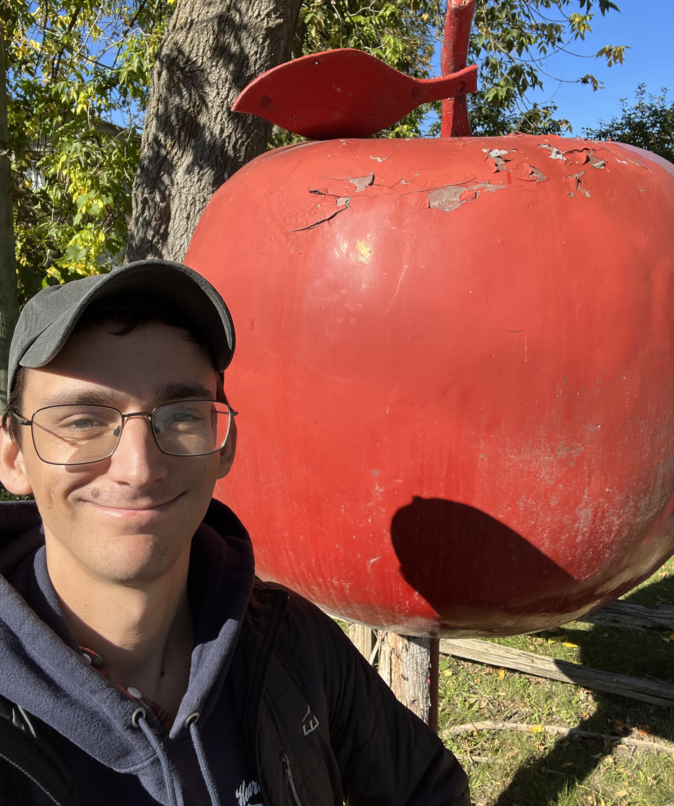
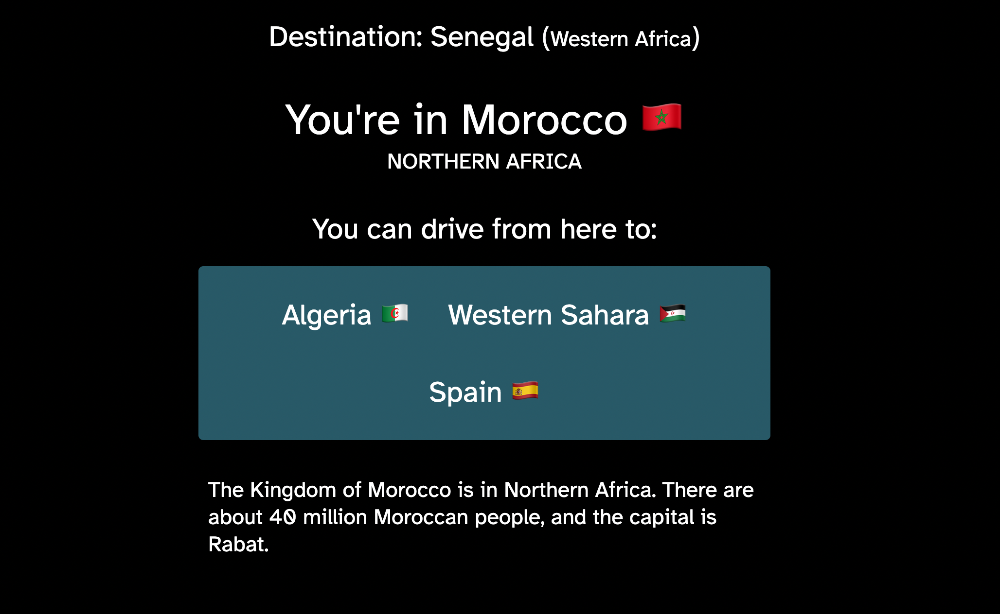
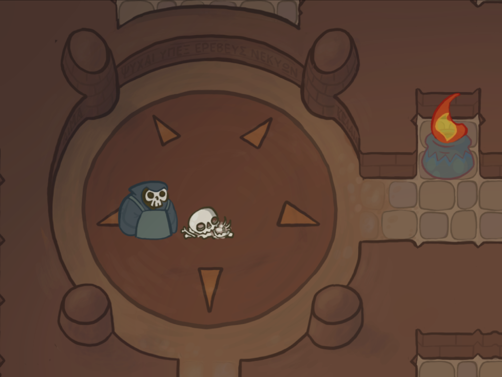
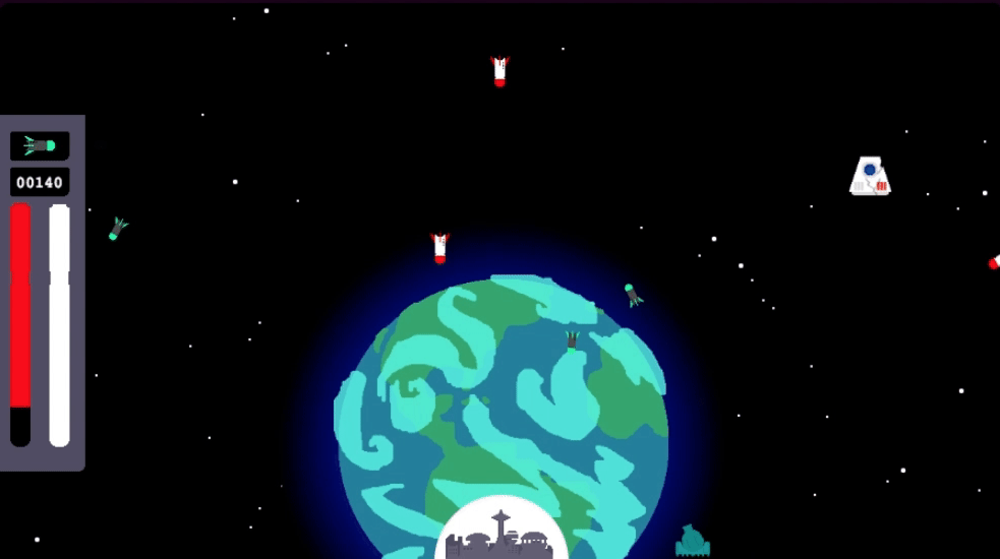
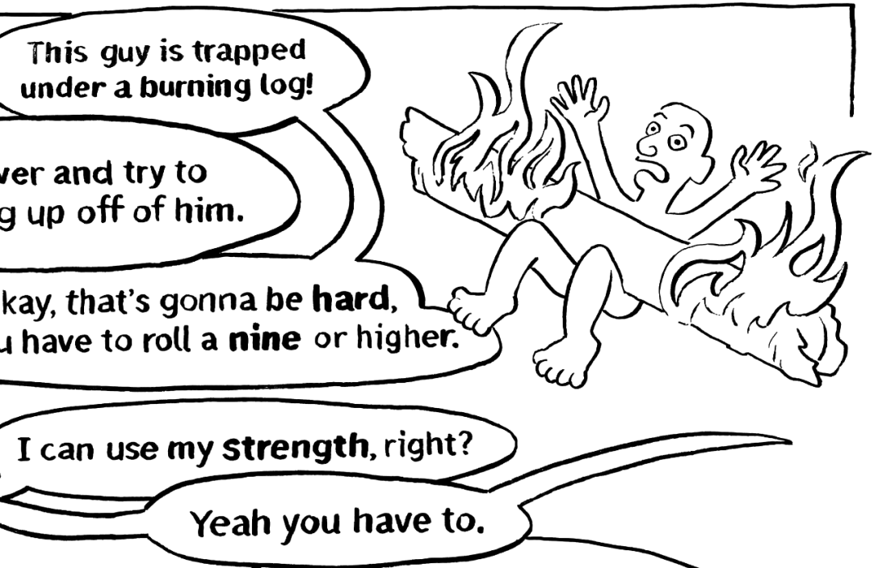
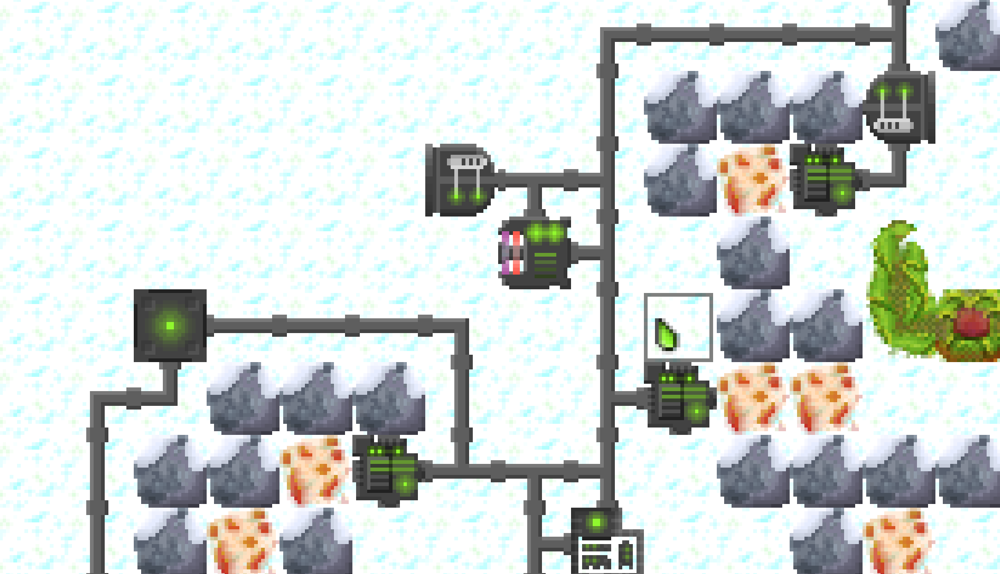
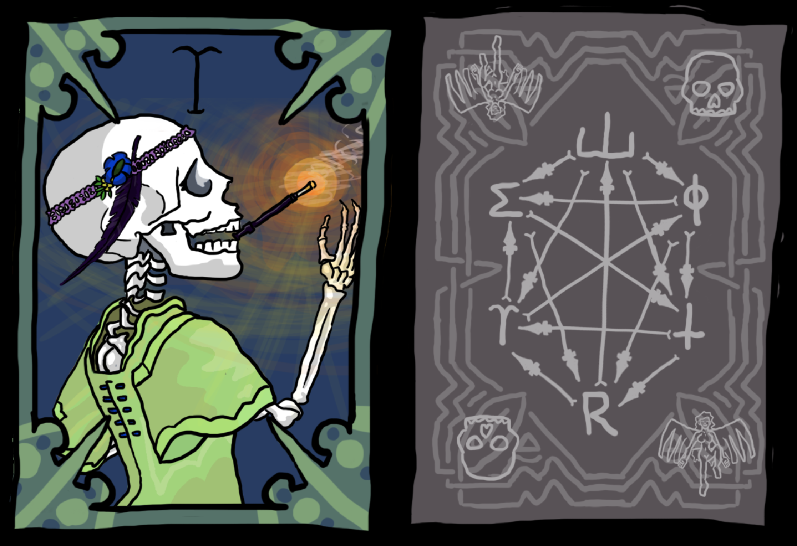
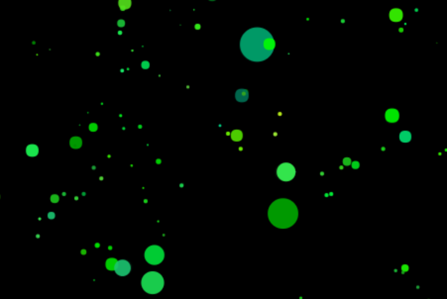

Teaching
Adult learning
Classes that make technical ideas clear and useful.
Education • software • illustration & animation
Hi! I'm John Goodman, I'm an educator, illustrator, and software engineer. You can see some of my work here. My goals are to teach, build, and make things people can use.
Montréal, Québec
Practice
Classes that make technical ideas clear and useful.
Web apps, interfaces, and prototypes built for real use.
Visual work that mixes clarity, character, and storytelling.

About
Contact
Illustration
Animation
My process for my animation work combines hand-drawn frame by frame animation with digital finishing and coloring. I try to emphasize character and clear visual storytelling. This demo reel shows some of my recent work.
Some Visual Work
A small collection of notes, diagrams, and image-based work. Click any piece to open the full image in a new tab.
Selected work
Software Development Bootcamp
I work with Circuit Stream to teach a Software Development Bootcamp course for adult learners. I teach how to understand code, build web apps, and work through real projects with modern coding tools. Right now we're working on deploying full-stack sites with React and Node.
Sleepy Hollow Map
A map I was commissioned to make for a Halloween event at Philipsburg Manor in Sleepy Hollow, New York. Made with a combination of pen and ink and digital sketching/coloring, and designed to be printed out and displayed on-site.
Fence
A small-scale browser game I've been working on where you play as a shop owner trying to earn a profit fencing stolen goods.
Games
Browser games, board games, and interactive experiments built around play and storytelling.
Selected work
Software Development Bootcamp
I work with Circuit Stream to teach a Software Development Bootcamp course for adult learners. I teach how to understand code, build web apps, and work through real projects with modern coding tools. Right now we're working on deploying full-stack sites with React and Node.
Fence
A small-scale browser game I've been working on where you play as a shop owner trying to earn a profit fencing stolen goods.
Illustration
Animation
My process for my animation work combines hand-drawn frame by frame animation with digital finishing and coloring. I try to emphasize character and clear visual storytelling. This demo reel shows some of my recent work.
Some Visual Work
A small collection of notes, diagrams, and image-based work. Click any piece to open the full image in a new tab.
Making games is what originally made me want to learn to write code. I've always loved inventing board games and card games, and using games as a form of storytelling. Here's an incomplete list of some of the interactive games I've made over the years that you can try.
A browser game where you run a shop and profit from stolen goods.

A daily geography game where you move between countries to reach a new destination.
A simple browser game built with JavaScript and HTML5 Canvas.

An exploration game set on a dangerous island.

An arcade-style shooter inspired by Missile Command.

An illustrated tabletop RPG rulebook.

A 2D tactics game about rebuilding a robot society.

A card game interface and opponent AI built from scratch.

A digital petri dish simulator based on simple cellular rules.